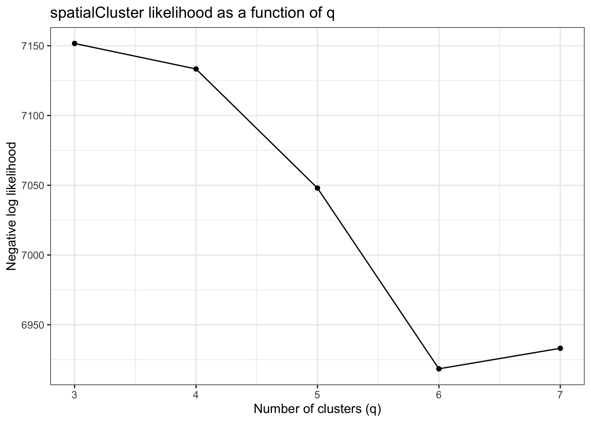
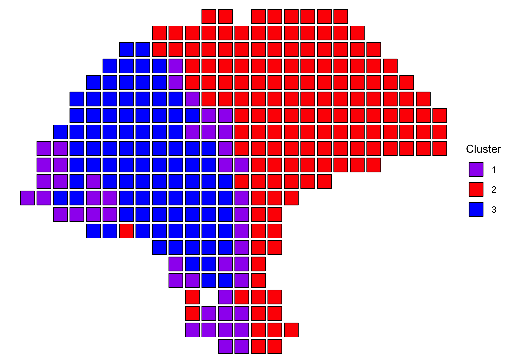
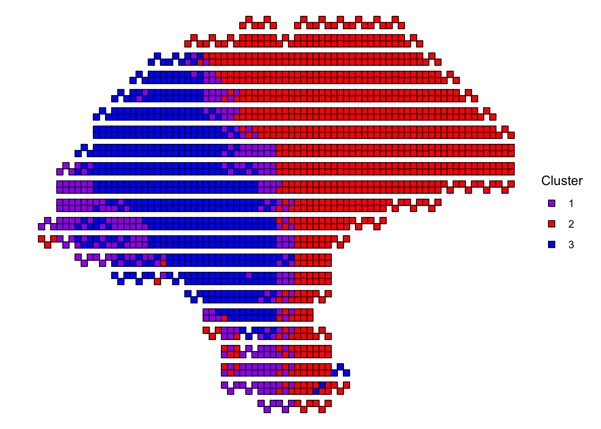

BayesSpace.RmdsuppressPackageStartupMessages({ library(SingleCellExperiment) library(ggplot2) library(BayesSpace) })
We’ll obtain one of the melanoma samples from the 2018 Spatial Transcriptomics paper for this example.
TODO: switch to a subset of a Visium dataset so we don’t need to specify position.cols and radius in demo
sce <- getRDS(dataset="2018_thrane_melanoma", sample="ST_mel1_rep2")
Our processed datasets already include PCs, but in general it’s necessary to preprocess samples by running PCA. We recommend running PCA on only the top highly variable genes.
set.seed(102) dec <- scran::modelGeneVar(sce) top <- scran::getTopHVGs(dec, n=2000) sce <- scater::runPCA(sce, subset_row=top)
We can use the qTune() and qPlot() functions to help choose the number of clusters to use in our analysis.

The spatialCluster() function will cluster the spots, and add the predicted cluster labels to colData(sce). Typically, and for analyses in the paper, we suggest running with at least 10,000 iterations (nrep=10000), but we use 1,000 iteration in this demonstration for the sake of runtime.
TODO: clarify row/col vs imagerow/imagecol, and ST vs visium
set.seed(149) sce <- spatialCluster(sce, q=4, init.method="mclust", model="t", nrep=10000, position.cols=c("col", "row"), radius=1, save.chain=TRUE)
Both the mclust initialization (cluster.init) and the BayesSpace cluster assignments (spatial.cluster) are now available in the SingleCellExperiment’s colData.
head(colData(sce)) #> DataFrame with 6 rows and 5 columns #> row col sizeFactor cluster.init spatial.cluster #> <integer> <integer> <numeric> <numeric> <numeric> #> 7x15 7 15 0.795588 1 1 #> 7x16 7 16 0.307304 1 1 #> 7x17 7 17 0.331247 2 2 #> 7x18 7 18 0.420747 3 2 #> 8x13 8 13 0.255453 1 1 #> 8x14 8 14 1.473439 1 1
We can plot the cluster assignments over the spatial locations of the spots.
ggplot(as.data.frame(colData(sce)), aes(x = col, y = row, fill = factor(spatial.cluster))) + geom_point(size = 7, pch = 22) + labs(x = NULL, y = NULL, fill = "Cluster") + scale_fill_manual(values = c("purple", "red", "blue", "yellow")) + theme_void() + coord_fixed()

The spatialEnhance() function will enhance the resolution of the principal components, and add these PCs as well as predicted cluster labels at subspot resolution to a new SingleCellExperiment.
enhanced <- spatialEnhance(sce, q=4, init=sce$spatial.cluster, model="t", nrep=10000, position.cols=c("col", "row"), xdist=1, ydist=1, save.chain=TRUE)
The enhanced SingleCellExperiment includes an index to the parent spot in the original sce (spot.idx), along with an index to the subspot. It adds the offsets to the original spot coordinates, and provides the enhanced cluster label (spatial.cluster).
head(colData(enhanced)) #> DataFrame with 6 rows and 7 columns #> spot.idx subspot.idx row col imagerow imagecol spatial.cluster #> <numeric> <integer> <numeric> <numeric> <numeric> <numeric> <numeric> #> subspot_1.1 1 1 7.33333 15.3333 7.33333 15.3333 1 #> subspot_2.1 2 1 7.33333 16.3333 7.33333 16.3333 2 #> subspot_3.1 3 1 7.33333 17.3333 7.33333 17.3333 2 #> subspot_4.1 4 1 7.33333 18.3333 7.33333 18.3333 2 #> subspot_5.1 5 1 8.33333 13.3333 8.33333 13.3333 1 #> subspot_6.1 6 1 8.33333 14.3333 8.33333 14.3333 1
We can plot the enhanced cluster assignments as above.
ggplot(as.data.frame(colData(enhanced)), aes(x = col, y = row, fill = factor(spatial.cluster))) + geom_point(size = 2.5, pch = 22) + labs(x = NULL, y = NULL, fill = "Cluster") + scale_fill_manual(values = c("purple", "red", "blue", "yellow")) + theme_void() + coord_fixed()

Note that the enhanced PCs are stored as a reducedDim and the enhanced SingleCellExperiment has no assays. To impute expression (or other features) at subspot resolution, we need to run enhanceFeatures() afterwards.
By default, log-normalized expression (logcounts(sce)) is imputed, but other assays or arbitrary features can be specified.
enhanced <- enhanceFeatures(enhanced, sce)
TODO: add outputs/plot for enhanceFeatures
If save.chain is set to TRUE in either spatialCluster() or spatialEnhance(), the chain associated with the respective MCMC run is preserved to disk as an HDF5 file. The path to this file is stored in the SingleCellExperiment’s metadata at metadata(sce)$h5.chain, and can be read directly using mcmcChain().
The chain is provided as a coda::mcmc object, which can be analyzed with TidyBayes or as a matrix. The object has one row per iteration, with the values of the parameters concatenated across the row. Columns are named with the parameter name and index (if any).
chain <- mcmcChain(sce) chain[1:5, 1:5] #> lambda[1,1] lambda[1,2] lambda[1,3] lambda[1,4] lambda[1,5] #> [1,] 0.01000000 0.00000000 0.00000000 0.000000000 0.000000000 #> [2,] 0.07716601 0.02809490 0.04923277 0.029632058 0.004986712 #> [3,] 0.07275226 0.04208836 0.03762690 0.008965030 0.002487695 #> [4,] 0.07805325 0.04867904 0.03494542 0.005154332 -0.017679223 #> [5,] 0.08875719 0.04706201 0.05793587 0.004569161 -0.059733913
To remove the HDF5 file from disk and remove its path from the metadata, use removeChain().